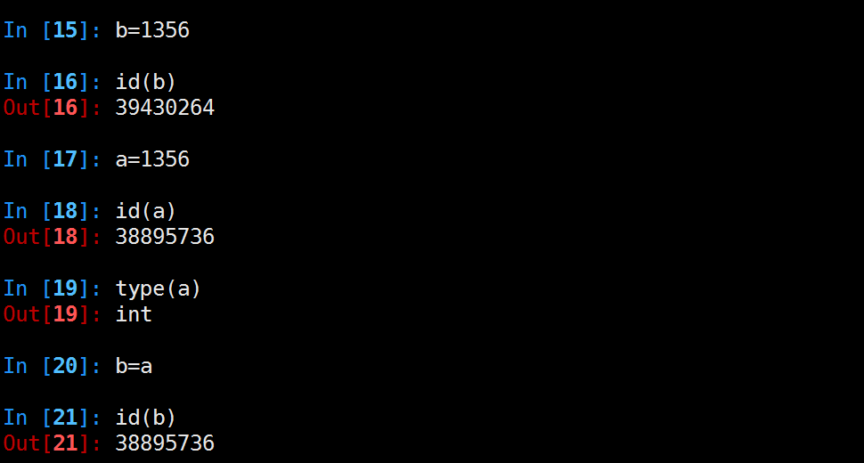
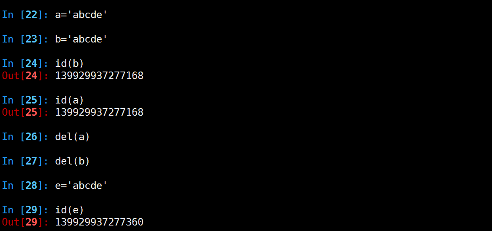
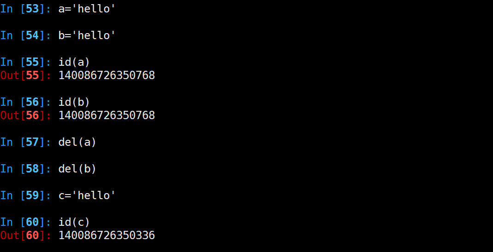
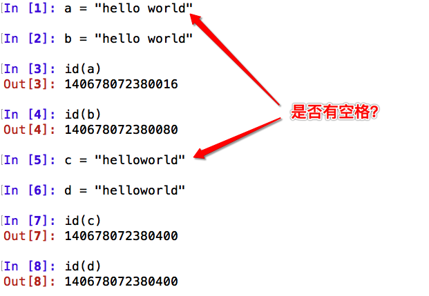
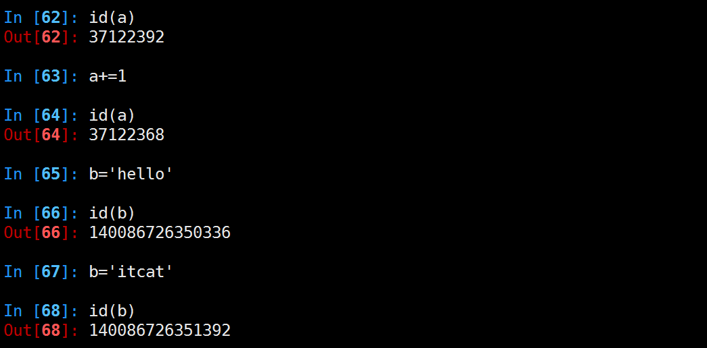

垃圾回收
1. 小整数对象池
整数在程序中的使用非常广泛，Python为了优化速度，使用了小整数对象池， 避免为整数频繁申请和销毁内存空间。
Python 对小整数的定义是 [-5, 257) 这些整数对象是提前建立好的，不会被垃圾回收。在一个 Python 的程序中，所有位于这个范围内的整数使用的都是同一个对象.
同理，单个字母也是这样的。
但是当定义2个相同的字符串时，引用计数为0，触发垃圾回收
2. 大整数对象池
每一个大整数，均创建一个新的对象。

3. intern机制
a1 = "HelloWorld"
a2 = "HelloWorld"
a3 = "HelloWorld"
a4 = "HelloWorld"
a5 = "HelloWorld"
a6 = "HelloWorld"
a7 = "HelloWorld"
a8 = "HelloWorld"
a9 = "HelloWorld"
python会不会创建9个对象呢？在内存中会不会开辟9个”HelloWorld”的内存空间呢？
想一下，如果是这样的话，我们写10000个对象，比如a1=”HelloWorld”…..a1000=”HelloWorld”，
那他岂不是开辟了1000个”HelloWorld”所占的内存空间了呢？如果真这样，内存不就爆了吗？所以python中有这样一个机制——intern机制，让他只占用一个”HelloWorld”所占的内存空间。靠引用计数去维护何时释放。

总结
- 小整数[-5,257)共用对象，常驻内存
- 单个字符共用对象，常驻内存
- 单个单词，不可修改，默认开启intern机制，共用对象，引用计数为0，则销毁 
- 字符串（含有空格），不可修改，没开启intern机制，不共用对象，引用计数为0，销毁 
- 大整数不共用内存，引用计数为0，销毁
- 数值类型和字符串类型在 Python 中都是不可变的，这意味着你无法修改这个对象的值，每次对变量的修改，实际上是创建一个新的对象 